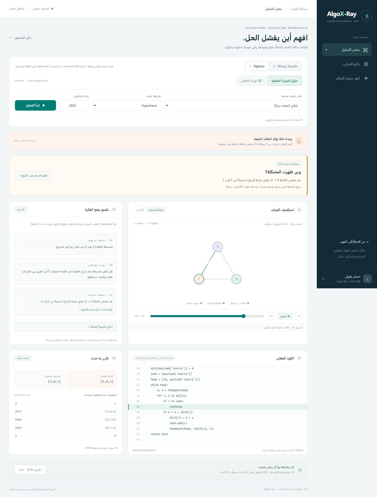

Counterexample-Driven Visual Debugging and Evidence-Grounded Hints for Algorithmic Problem Solving
Implementation-grounded draft · 26 November 2026 · Author review required.
Not camera-ready. Original submission, reviewer wording and venue format remain to be reconciled.
AlgoX-Ray is a local prototype connecting legal counterexample search, validation, reduction, recorded Python execution, and staged feedback. It supports bounded Dijkstra and binary-search contracts. Hypothesis generation and shrinking are reused, with a seeded random baseline. Specific diagnostic observations require a reviewed source fingerprint and a matching runtime predicate; otherwise the system abstains. A technical evaluation executed 320 trials over eight source files: seven authored fixtures and one adapted, attributed QuixBugs program. Both generators found reproducible failures in all 240 buggy trials combined, with 0 accusations across 80 control trials. A separate automated audit checked 40 emitted claim instances in 20 runs. These results demonstrate feasibility on the declared sample, not educational effectiveness or general root-cause accuracy.
A failing output alone does not show which recorded program state supports a debugging observation. This prototype packages a legal witness, expected and observed results, replay outcomes, source/version provenance, line events, and claim-to-event references in one inspectable evidence bundle. The engineering contribution proposed for review is this explicit connection and its abstention rules. Test generation, shrinking, visualization and programming hints each have substantial prior work. No claim of algorithmic novelty or a first-of-its-kind system is established here.
Python Tutor provides execution visualization [1]. Code Hunt uses automated input/output clues and dynamic symbolic execution [2]. ITAP studies data-driven personalized programming hints [3]. CodeHelp uses LLM assistance with guardrails [4], while CodeAid evaluates an assistant in a course deployment [5]. Hypothesis supplies mature property-based testing and shrinking [6]. AlgoX-Ray does not reproduce the full capabilities of those systems. It currently uses deterministic feedback templates rather than an LLM, restricts semantic adapters to two reviewed fixtures, and contributes a locally inspectable evidence workflow. This comparison is scoped and does not establish absence of similar features in prior systems.
Each problem has an input validator, output checker, reference, generator and size measure. Dijkstra accepts simple directed graphs with 2–8 vertices, at most 20 unique edges, positive integer weights 1–20, and a valid source. NetworkX Bellman–Ford is cross-checked against an independently implemented small Floyd–Warshall computation on each candidate. Unreachable distances are null. Binary search accepts sorted arrays of length 0–32, values and target in [-20,20], including duplicates; any matching index is valid. A linear membership/index check supplies its reference contract. These bounds are experimental scope, not universal algorithm support.
Seeded random and general Hypothesis strategies generate inputs within the same legal domain, with different sampling distributions. Candidate failures are replayed before acceptance; wrong answer, exception, timeout and output-contract violation remain separate. Oracle disagreement yields no accusation. Hypothesis find performs its library-supported search/shrinking when enabled. The random/manual path uses greedy legal reductions. Every accepted reduction preserves a confirmed failure category and exception type where applicable. Reduction is best effort and does not prove a globally minimal witness. Search budgets and post-discovery work are recorded separately; post_discovery_candidates includes internal confirmation calls and must not be described as pure shrinking attempts.
A persistent child interpreter executes each candidate in a fresh namespace. Source hash, bounded output, per-case deadlines, process-tree cleanup and bounded sys.settrace snapshots are recorded. Line snapshots describe state before the highlighted line. Final evidence includes three replay attempts and a traced replay checked against the untraced outcome. Truncation or a trace-induced mismatch suppresses source-specific diagnosis. Claim references must resolve to recorded events. E0 denotes inconclusive evidence; E2 a confirmed legal witness; E3 adds a supported source-specific runtime observation. These labels express the prototype's validation policy, not a mathematical correctness proof.
H1 states a verified failure observation; H2 asks an educational question and is not a proven cause. H3/H4 appear only if the source fingerprint and complete-trace predicates match a registered adapter. For the premature-visited Dijkstra fixture, the predicate records a continue at a seen vertex even though d+w improves its distance. For the binary fixture, it records a missed final matching element. Editing the source disables that adapter. Generic code can still produce a witness and trace without a specific diagnosis. The HTTP interface accepts catalog fixtures only and binds to loopback. Reviewed local solve(payload) files are supported through an explicit CLI trust flag. The subprocess runner is not a hostile-code sandbox; public arbitrary-code submission is outside scope.
The saved protocol uses eight source files, 20 seeds (2026–2045), and two generators, giving 320 trials. Six files are intentionally buggy and two are correct controls. Seven are authored fixtures; one is adapted from the MIT-licensed QuixBugs find_in_sorted program [7], pinned by commit and source hash. All sources were reviewed; split labels are bookkeeping and are not a blinded holdout. Each discovery trial uses up to 100 candidate inputs or five seconds before the first confirmed witness, with shrinking and tracing disabled equally. Generator order alternates by seed. Timing includes worker startup and pre-acceptance verification. Discovery medians include successful trials only; censored and excluded runs are counted in the machine-readable summary. Repeated seeds are not independent programs or learners.
The table reports actual saved runs. The random baseline was faster in median discovery time on both sampled problems. The result provides no evidence that Hypothesis is superior on this sample; distributions differ, timings are machine-specific, and the corpus is small and known. No censored or excluded trials occurred in this run. The QuixBugs fixture is detected through a recursion exception on suitable absent targets, which is reported as an exception rather than silently recoded as wrong answer.
| Problem | Generator | Witnesses | Controls | Median ms | Cases |
|---|---|---|---|---|---|
| Binary search | hypothesis | 60/60 | 0/20 | 85.90 | 4 |
| Binary search | random | 60/60 | 0/20 | 81.73 | 2.5 |
| Dijkstra | hypothesis | 60/60 | 0/20 | 105.48 | 15 |
| Dijkstra | random | 60/60 | 0/20 | 77.41 | 1 |
A fresh virtual environment on the same Windows machine installed the locked dependencies and passed 49 automated tests, followed by a manual-case CLI run. This is installation validation, not independent-machine replication. Browser automation passed 12 journeys, including local-only requests, graph/array views, hints, event navigation, JSON export, invalid input and a 390-pixel mobile layout; no page errors or external requests were recorded. Separately, 20 generated/shrunk runs on the two supported authored fixtures produced 20 witnesses, 20 complete traces, 60/60 matching replay attempts, and 40/40 claim instances passing structural/arithmetic/source predicates. This audit shares the implementation's diagnostic rules and is not an independent human factuality study or event-level fidelity estimate.
The supplied three-vertex Dijkstra example has edges 0→1=1, 0→2=3 and 1→2=1. The buggy fixture returns distance 3 for vertex 2; the validated reference returns 2. The interface displays the witness and source, highlights the actual recorded line, allows event navigation and gradual feedback, and exports the evidence. The companion JSON records the exact source fingerprint, event IDs and replay outcomes. This manually supplied example explains the mechanism; it is separate from the generated discovery benchmark and does not recover historical manuscript counts or event identifiers.
Input: {"n": 3, "edges": [[0, 1, 1], [0, 2, 3], [1, 2, 1]], "source": 0}
Observed: [0, 1, 3]
Reference: [0, 1, 2]
The sample contains only eight known source files and two bounded problems. The one external benchmark program does not make the corpus representative of student work. Replays increase confidence in observed stability without proving determinism. Source-specific predicates cover two authored mistakes and do not infer arbitrary root causes. Recorded variables are bounded snapshots, not a verified semantic model. There is no learner study, blinded test set, independent human annotation, educational-effect estimate, global-minimality proof, adversarial sandbox or general-language support. Timing depends on the Windows machine, libraries, worker startup and input distributions. These limitations should remain visible in the paper and demonstration.
Source, contracts, attribution, locked dependencies, tests, benchmark configuration and raw run files are available in the local project. Reproduce with the commands in README.md and inspect results/benchmarks/20261126T074920Z. The evaluated source/protocol SHA256 is cff4e82bd46badc850eca72cf08fc90a9a5c1c70e0561d00ec2d9ee64c9dba9c. There is currently no verified public artifact URL or Git commit; a downloadable source snapshot is prepared separately. The implementation demonstrates a feasible bounded workflow from a verified failure to inspectable feedback. Broader diagnosis accuracy and educational value remain research questions. This draft must be reconciled with the original submission, reviewer text, author details and the venue's template before camera-ready submission.